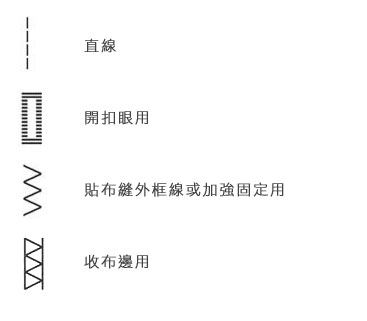
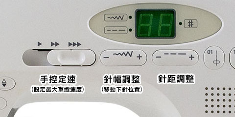

不管那個領域，大概都會有類似的狀況，攝影、烹飪，比設備、討論設備的優缺點，各種操作的技術方法，經常會變成討論的焦點，擁有一套名牌及昂貴的設備，會立刻成為眾人羨慕的眼光，而愛聊設計、談觀念和想法就顯的稀有而知音難尋。
面對各式各樣的縫紉機，各種強力的行銷包裝之下，一不小心，我們就會迷失在縫紉機的追逐賽中，等級很高的縫紉機，實在好喜歡，但價格經常讓人下不了手。而便宜的呢？擔心車子不好用，買來會後悔。
沒關係，Amy來分享個人使用縫紉機的一些經驗，希望能幫助大家，在選購時能清楚自己的需求，了解各種等級縫紉機的差異，而選擇最適合自己的縫紉機。
工欲善其事，必先利其器，選擇一個適切好用的工具，的確很重要，也往往是整個學習過程的起點，且隨著觀念的提昇，設備及技術能力往往也要配合著進步，才能相輔相成，切莫一昧的追求設備即可，畢竟，真正感動人的是我們的創造力。
縫紉機選擇時要考慮什麼?
一、穩定性
穩定性包含很多，品質穩定、耐用是選購縫紉機第一要素，斷線、斷針或跳針都是品質差的縫紉機容易發生的問題，上下線張力不穩定、車線會有些歪歪斜斜的針址不固定等問題，遇到這種車子時，光搞定車子就快抓狂了，那有心情好好做手作呢，也會超沒有成就感的。
穩定性的好壞，在店面試用時不容易比較出來，也難以從規格上來判斷，如果聽到了「這台就可以啦，你需要的功能都有了」時，請務必再去思考它的穩定性問題，多問一下店家的使用經驗，或從網路上找看看對於穩定性討論的文章。
二、馬力
隨著作品複雜度越高，變化性增加時，往往會需要車縫較厚或疊很多層的布，此時縫紉機的馬力夠不夠強，就會有很明顯的感覺，較平價的家用縫紉機，通常馬力比較不夠，所以一遇到太厚的布就會卡關車不過去，也可能會發生斷針或卡線等問題。
馬力代表著縫紉機的性能，也像是縫紉機的心臟，我覺得是很重要的東西，其他貼心輔助的功能，我們還能靠技術去克服，但馬力不夠的縫紉機，在關鍵時刻使不上力，除了很想砸車外，基本上也只能放棄。
三、花樣
不少家用型縫紉機都會標榜內建花樣多，有些甚至多達數百種，以我的經驗來說，花樣其實很少會用到，我們外頭買的包包幾乎沒有在車花樣的吧? 所以，如果因為增加了花樣，而增加許多價格的話，我會覺得較不值得，除非你是花樣的重度使用者。

Amy平常只會用到這四種花樣而已
四、可調最大車縫速度 (手控定速)
對於初學者來說，這個功能很重要，初學者最害怕的就是控制速度，往往因為速度太快而車的歪七扭八，電腦型縫紉機幾乎會有這樣的調整功能，部份電子型也行，可以將最大車縫速度調的很慢，這樣就能專心的慢慢的調整車縫位置。

圖示：車樂美 Janome J-760
五、可位移車針的位置 (調整針幅)
對初學者來說，這是個很方便的功能，對於縫份對齊方式還沒抓到感覺時，可左右位移下針位置，就等於在調整縫份的寬度，可較輕易的車縫出較精準的縫份位置。
六、可調針距
車縫的過程中，車針一上一下的，在布上會車出一段一段的線條，那車針的間隔就是針距，針距會影響作品看起來的感覺，針距大，感覺會比較粗獷，通常也適用大包包，針距小會比較細緻秀氣，也較適合用在小物上，針距調整的功能很實用，基本上大部份的車子都會有。
七、梭子安裝方式，全迴轉式或半迴轉式
目前市面上最多的就是水平全迴轉式及垂直半迴轉式兩種類型，最明顯的差異是底線梭子安裝方式的不同，水平全迴轉式是較新的設計，對於初學者來說，安裝較為簡單方便是最大的優點，其餘像是運轉噪音較小、較不易絞線及可以看到剩多少餘底線等，也都優於垂直半迴轉式，唯一的缺點就是價格略高一些吧
八、壓腳及送布齒
壓腳和送布齒主要負責固定布料，能穩定及正確的推送布料至每一次下針的位置，每個品牌或機型的縫紉機，在壓腳及送布齒運動方式的設計都有些不同，對於車縫時的順暢度的表現也略有不同，建議在試車縫的時候，可以特別感受不同機型在送布時的差異。若單從規格上來說，送布齒數量高的，送布的穩定性較好，市面上較一般的是 5 排，好一點的會多達 7 排。
而高階一點的機型，會有比較強的壓腳壓力，壓腳壓力大，能將布緊緊的固定，在車縫時比較不會滑動，尤其在車縫厚布時會特別感覺有差別，有趣的是壓腳壓力大的工業用車或仿工業用的縫紉機，它就不太強調送布齒的數量，只有三排送布齒就可以把布送的很穩了。
九、重量
現在很多產品是越做越輕，且越輕越貴，但縫紉機則是相反的，跟相機有點像，重一點的機型，通常定位較高階的，機身採用鋁合金做骨架，價格也會比較高，因為強大的馬達與性能，需要足夠重量的機身才能支撐其穩固性，金屬骨架的機身才夠耐操。較低價的機型因為成本的考量，機體用的塑料比較多，因此機身就會比較輕，便無法搭配高性能的馬達。所以，在比較重量的同時，輕一點的機型除了攜帶方便外，大概沒什麼優點了，如果真想買一部好用的縫紉機，Amy建議要買有一點重量的會比較好。
另外縫紉機的配重也會影響車縫的穩定性，試著把縫紉機抬起來，感覺看看會不會頭尾重量不太平衡，好的縫紉機設計配重比較接近機身的中心，車縫起來會更穩定。
家用縫紉機有那些種類?
機械式
耐用是機械式最大的優點，同價格來比較，通常機械式感覺馬力會強一些，
只能用腳控制速度，無法設定車縫最大速度，無斷針保護。
適合：大部份定位在中低價位，稍有過車縫經驗的人，不需要很多便利性功能，想要一部價格適中又耐用的縫紉機。
電子型
操作便利性較不如電腦型方便，除此之外功能大致與電腦型的差異不大，電子型的花樣選擇方式，多半用旋鈕或撥盤來切換，因為撥盤空間有限，所以花樣較電腦型少。
適合：大部份定位在中低價位，特別適合預算不高的初學者，有一些基本的好用的輔助功能，馬力性能通常不是它的強項，只要不是車縫特別厚重的布料，能足以應付大部份的狀況。
電腦型
從外觀上很容易區分電腦型與電子型，電腦型的縫紉機會有一個液晶螢幕，大部份的設定都透過這個螢幕來顯示，所以電腦型的縫紉機的功能可以很多，外觀還可以做的較為簡潔。
移動車針位置、調整針距、手控最大車縫速度等功能，通常都是電腦型縫紉機的基本功能。
適合：大部份定位在中高價位，預算若充足一些，電腦型會是最佳的選擇，價位大約從一萬初到三萬多，甚至10萬以上的機型也有，比較初階的可選擇一萬多的機型，需要更高馬力性能的機型，則大概在二～三萬左右，三~四萬則有電腦型的仿工業家縫紉機。
機械式仿工業家用平車
耐用、馬力強、速度快、穩定性高，重量較重，所以車縫感覺更穩定，雖然較重但還算可以攜帶，定位在平車的機型，甚至只有直線車縫，完全沒有其他的花樣，無法調針距及位移車針位置，可以微調上下針張力，完全就是專心做好直線車縫這檔事兒，所以雙手萬能，一般家用車那一堆輔助的功能，全都可以靠技術克服，最重要的還是耐用、穩定及馬力。這種類型的縫紉機選擇性不多，價格也較高。
適合：價位通常在三~四萬，有縫紉經驗，用習慣工業用平車，不方便放工業用平車在家裡的人，要車厚布、皮革，需追求製作效率且使用量大的話，仿工業家用平車大概會是很好的選擇。
別急著買，先去教室上課吧
看完了上頭一堆的介紹，對於沒碰過縫紉機的初學者來說，我想還是很沒感覺吧，Amy真心的建議先不要急著買車子，先到拼布教室上課吧，在教室內可以真正完整的感覺上面所說的所有事情，又可以確定自己是不是真的喜歡手作。
Amy的手作教室(已暫停) 刻意選了 6 款不同等級的縫紉機，就是要讓學員去感受其間的差異，了解設備也是學習很重要的一環喔。

Amy從開始教學以來，工作室刻意放了各種價位的機型讓同學玩，希望幫忙同學懂得挑選最適合自己的縫紉機，因為我希望大家不要只追求貴的設備，要衡量自己的預算和需求，幾年下來實際的使用及同學的反應，Amy幫新手、進階及老手各選了一部比較推薦的機型，不論價位高底，都必須要至少要通過耐用、好車、穩定及美麗外型等標準，分別是左邊的Janome 5031S、Janome 6030及最右邊的Janome1600P-QC，如果你剛好也在苦惱如何選擇，不仿可先從Amy推薦的這幾部去了解看看。
想購買或試車
現在跟Amy購買縫紉機，除了可享價格優惠外，還會再贈送Niizo折價券(可使用於手作課程或材料包)。
> 看各機型價格及贈品
暫不訂購！可填表單留email，將主動通知團購訊息
https://forms.gle/eJ5ErjTgP6EjFdWY8
我們每年會開兩次縫紉機團購，通常會在每年的三月及十月份左右，如果暫不急著訂購的話，可先填寫表單，留下正確的email，有開新的團購會主動通知您喔!

{kind=link}
{kind=link}
{kind=link}
2018/05/06 at 3:18 下午
老師您好，
最近想購買車樂美縫紉機，本身有使用經驗約一年，目前考慮Dc6030跟3160QDC，平常製作小包/嬰幼兒用品/偶爾有厚布需求，例如帆布包/合成皮革/防水布，能否請老師幫我評估兩台的差異呢？非常感謝您！
2018/05/30 at 11:45 下午
您好，3160我有在教室試用過，但沒長期使用，但6030有長期使用，所以，好像很難幫您評估差異，規格看起來差不多，但價差蠻大的，建議到兩台都有的教室去試車看看比較準喔，加油～
2018/10/17 at 7:44 下午
您好，
因為您之前有詢問過縫紉機，剛好現在有縫紉機的團購活動，給您參考喔。
/blog/2018/10/15/sewingmachine_event/
2017/10/11 at 2:15 上午
你好 我想幫女兒(國一)尋找簡單的縫紉課程
請問有開假日的班嗎？(初學)
2017/10/14 at 9:33 下午
每個月會開兩個週六課喔，您可參考課表喔～
/sewingclass/
2017/01/08 at 8:41 上午
老師您好
我想學車縫 帆布包之類有點厚度的包包,經費有限 想問Janome 3090 適合做帆布包嗎?還是有其它推薦 感謝
2017/01/13 at 11:44 下午
您好，3090我沒用過，但若要車縫包包，建議您還是試用過比較好喔，剛好我這幾天有推我工作室常用的縫紉機的優惠，5031S您可參考看看喔，/blog/2017/01/13/sewingmachines_event201701/，謝謝。
2016/12/26 at 1:10 下午
老師您好~打擾了~
針對您說的9大重點,不知道車樂美J890這台對於初學者來說是不適合呢?
最主要想車一些小東西,平日修補,或是去學做包包之類的….
這台J890是否適合呢?謝謝老師
2017/01/13 at 11:39 下午
mita您好，J890我沒用過，但從網頁上看起來，這價錢很吸引人，如果是車縫小物和家裡的修補，一定很夠用，但若要車縫包包，建議您還是試用過比較好喔，剛好我這幾天有推我工作室常用的縫紉機的優惠，您可參考看看喔，/blog/2017/01/13/sewingmachines_event201701/，謝謝。
2016/06/02 at 9:45 下午
請問一下有關新手縫紉機的選擇,我是第一次買縫紉機,之前都是手縫零錢包與手機袋,現在想用縫紉機來縫製.我查過了網上有關縫紉機的資料,目前看中了 NCC-百合Lily實用縫紉機 CC-9909這台只有四排送布齒,台灣製造;另一台是brother GS-2700 這台有6排送布齒,中國製造,請問送布齒少兩排會在縫紉東西時差很大嗎?我該選擇哪一台比較好?謝謝. 另外送布齒是可以自己去買配件把四排換成六排的嗎?謝謝喔
2016/06/20 at 9:44 下午
patty您好~
送布齒越多排能把布料咬最緊，在車多層布時就會很有感，所以，當然是六排比四排優，送布齒也不是能隨意更換的配件，所以，通常送布齒越多排，也會越貴
，原則上是越貴越好用，所以，還是看您的預算考量，希望對您有幫助~
2016/06/01 at 11:28 下午
我想知道哪邊有您的工作室
2016/06/20 at 9:37 下午
若蘭您好~我的工作室在三峽喔，交通資訊在這~
/sewingclass/location/
上課需事先預約喔，給您課表參考~
/sewingclass/
謝謝~
2016/03/29 at 2:01 下午
老師妳好 如果以上你說的功能都有 不用太多樣式妳有推薦哪一臺縫紉機嗎 可以給我價位高的跟低的都可以感謝妳?
2016/04/16 at 10:19 下午
您好～真心的建議還是要到縫紉教室試車才會知道哪台適合自己喔，或者，先上課用過裁縫車了，才知道要怎麼挑選喔。
2016/03/07 at 8:48 上午
Dear Amy:我想買有作假髮功能的裁縫機，可以推薦給我了解嗎？感謝！
2016/03/09 at 8:07 下午
鳳兒您好，我沒做過假髮，不知道做假髮需要那些特別的功能，所以，不知怎麼推薦裁縫車給您，很抱歉沒能幫上忙。
2015/11/28 at 4:05 下午
你好;)想请问你有使用过胜家2250吗？请问这一款是否可以车厚布料？
2015/11/29 at 9:46 下午
您好，我沒用過這台車耶，如果不確定，可以去試車看看喔，加油。
2015/11/13 at 11:15 上午
請問..我想買車樂美縫紉機
用來車包包,錢包之類,可是不知道該買哪台
最厚可能車到兩片帆布+織帶吧
通常只使用到直線,孩沒接觸到車布邊,所以應該不需要太花的花紋..實用就好
能請您推建嗎?
2015/11/23 at 11:59 下午
您好，
依您的需求看起來，我會比較推薦Janome 5031S，以這個價位來說，它算是比較有力的，且有七排送布齒，車縫的穩定性很不錯，缺點是它的花樣比較少，價格15000，送1000元折價券(可使用Amy的實體課程或niizo材料包)，有需要再跟我說。
2015/09/29 at 6:50 下午
我要做作業覺得老師的文章很棒希望可以轉貼一下
謝謝老師喔
2015/09/30 at 9:55 上午
OK的，很歡迎，也請你讓我知道轉貼的網址喔！
2015/09/28 at 8:18 上午
請問妳的教室在那?
2015/09/28 at 11:43 下午
在三峽，這邊有詳細地址，/sewingclass/，歡迎來上課。
2015/08/11 at 4:45 下午
你好… 之前我有跟你買一台車樂美用的很上手… 我媽也想買一台 但他的預算只有5000元 老師你有建議車樂美的型號可以介紹嗎… ( 我媽平常只會改改褲管之類的… 只是要有自動穿線的功能 )
2015/08/28 at 1:25 下午
sindy您好～
或許可以考慮J820，這台是文大上課用的，還算物美價廉，http://www.janome.com.tw/product/n_820.htm
價格部分我要問問，應該不會跟您的預算相差太大，有需要再跟我說，我在幫您問價錢，我的mail是[email protected]
2015/05/23 at 3:53 下午
老師你好
我要報名5/26